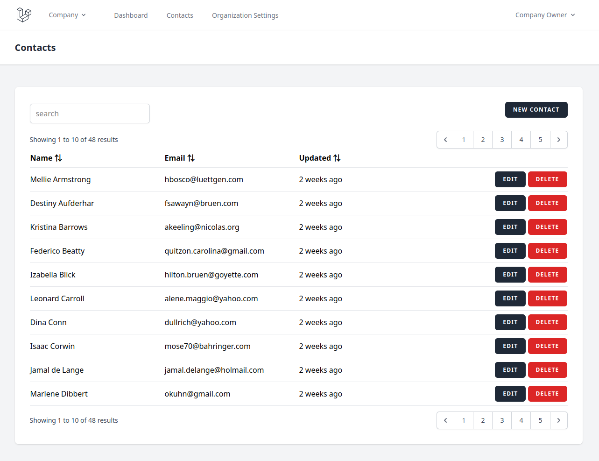

Index Page State Management
When you, like me, have spent a significant part of your career on Business Support Software (BSS) you may recognize a pattern: The majority of the actions in these application are Create, Read, Update, Delete (CRUD).
User interfaces reflect this too. The menu has a button labeled "things" which takes the user to an 'index page'. This index page has a button to create a new [thing], a list of [things], which the user can read, and buttons next to each individual [thing] to update and delete that specific "thing".
This is the way web applications are. There is nothing wrong with that. Times when UX designers deviate from this pattern are the times your users start to hate your interface. This is not to say interface design is easy or unnecessary. Someone has to determine important stuff such as which fonts to use and what color the buttons must be.
In order not to present the user with a page with 10,000+ [things] on it and simultaneously bankrupt the company with cloud hosting bills, there is a set of common solutions that most people agree upon: Filter, Sort, Paginate.
If you implement these features in that order, you will not go wrong.
Firstly, the user can usually narrow the results down by typing into a search box. In the past, each property of [thing] had its own search box, but our UX designer colleagues in all their wisdom have decided this was way too difficult for the user to understand.
The company will just have to eat the cloud hosting bill and do a database lookup on all properties ... or add Elasticsearch to your stack (like a proper developer) ... or use Algolia because Elasticsearch is hard and you are busy. And now all of your company's profit margins go directly to Algolia and you should have just used Elasticsearch (like a proper developer).
Wait, where was I going with this? Right, you let your user filter the [things] on the index page. Implementation details are their own seperate headache and you will burn that bridge when you come to it.
Secondly, the user can sort the [things] by a property. For example, the [things] are people and the user decides to sort them by email in descending alphabetical order. This is easy.
Lastly, the index page is paginated. These are the little 1, 2, 3, 4, 5 page numbers at the top and bottom of the page that lead you to all these other pages you never look at.
After all the best place to bury a body is page 2 of google search. Seriously though, there absolutely are valid use cases for pagination in CRUD applications.
That's enough of my limited understanding of UX design. Let's talk technical details.
State
In a proper web application, the URL changes as the user navigates. This is great because they can shut their computer down and continue where they left off the next day. Also, they can share a URL with a colleague and that colleague will most likely see the same thing on their screen. (Helps with remote and/or asynchroneous collaboration, often eliminates the need for screen sharing software, etc.)
On top of that, having the URL represent the state of the application is the correct thing to do.
It is how the web was always supposed to function.
URL stands for Uniform Resource Locator after all, meaning it locates a resource.
The fact that the modern web is full of poorly build Single Page Applications (SPA) that don't respect this basic principle, and instead have the user navigate to their destination every single time, does not make the original idea of a URL any less valid.
And now, with no further ado, the proper way to put the state of the index page in the URL:
http://your-startup-has-zero-users.localhost/things?search=barendsma&sort_by=email&sort_direction=desc&page=42
That's it. You have probably seen this a thousand times before and never thought about it, but now you know why. Great. Article over. We're done here.
Except... There is one little annoying problem.
The problem
What happens when the user clicks the 'edit' button next to a [thing], edits the [thing], and clicks the 'save and close' button. You do have a 'save and close' button, right?
You see, what the user expects to happen is that the 'save and close' button will take them back to the index page they came from. The same index page they came from. With the same search, sort, and paginate parameters they used before they clicked that 'edit' button.
Unfortunatly, after searching the internet, asking ChatGPT, and asking experts, I have come to the conclusion that all commonly used solutions to this problem range from suboptimal to wrong.
Offensively wrong and disrespectful to the fundamental principles the internet was built upon.
The (bad) solutions
Index pages have been a thing for decades. Why the countless engineers working in web development all this time have not come up with a convention on how to solve this problem is a mystery to me. And I do not have a perfect answer to it either.
The best I can do is list the three categories of solutions I have found and explain why they are all bad.
1. abuse the user-agent's history functionality
You could have make an implementation that executes Javascript in the user-agent,
which does the same thing as the user clicking the 'back' button on their browser:
history.back()
Often this is abstracted away by many layers of SPA framework, but that's irrelevant. Ultimately, your application abuses the user-agent's history to send the user back to the previous page.
The first problem happens when you take a closer look at the index page you just returned to. The [thing] you just modified on the edit page appears unchanged. Your save function works fine but the user-agent didn't actually reload the list of things. That's not what the history is for, instead it retrieved the list it had already loaded from its own memory also known as cache.
You can "fix" this in many ways. In certain architectures a cache-control header might fix the problem.
In other cases you may write some custom Javascript that detects when the user has returned from the edit page.
This custom functionality then triggers a reload, either of the records on the page or the entire page,
depending on what your application architecture looks like.
However, when the user did not come from the index page, but a deeplink from outside your application. Your 'save and close' button will send them back to wherever they came from. They will be sent to a page outside your application, when they were expecting to be taken to the index page.
Another interesting user experience would be when they opened the deeplink in a new tab or window. Your user won't be taken anywhere when clicking the 'save and close' button, because there is no previous page.
You could write more custom Javascript to solve this use-case also, but I can assure you: your user will always find a way to use your application in a way you didn't expect. You will be putting a patch on a patch forever and the user experience will always be bad.
At this point, the user will say "the application sucks",
the developers will say that the user is "using the application wrong",
and the product owner will say "this is only 1% of our users, we have more important features to build".
Keep in mind that the product owner did not measure whether the amount of users encountering this
bad user experience really is 1%. That's not how they operate.
They just pulled that number out of their rear end,
because their KPIs tell them to get the newest features out the door and they want that end-of-year bonus.
Who is correct in this scenario? The user.
I am a developer, I have often heard my colleagues say:
"The user is using the application wrong."
Here's what this translates to:
"I'm bad at my job and don't understand the fundamentals."
If that hurt your feelings, get over yourself.
The reason I'm this harsh is called
Net Promoter.
It's an interesting topic in it's own right, but the bottom line is that a single
user thinking "the application sucks" cancels out ten users who believe your
application is the best thing ever.
This one user will become a 'detractor', telling their colleagues, friends and family
how much they hate your application and they should never use it.
They will actively lobby their boss to switch to a competitor and never do business
with your company again.
It doesn't matter how wrong or irrelevant you think this one user is,
they will persevere, they will win, your business will lose a client and you will
lose your job.
2. store the query parameters in the session
Another common solution I have seen in demo projects, framework documentations and on forums is to store the latest query parameters in the session.
The 'session' is a transient piece of state that exists for the combination of user agent and application.
Open the same application in a different browser and you have a different session,
but two tabs or windows in the same browser will have the same session.
Unless it's a private browser window. Your private interests can't be tracked using the session.
We developers have 99 other ways to track you, but a session ain't one
The problem here is that the session is storing the state of the index page at a fundamentally wrong level. The state of the index page is a property of the window or tab the user is on. Not their entire user-agent.
This misunderstanding of how the web works will express itself
as soon as the user opens the application in more than one tab or window.
Usually when another user sends them a deeplink to a specific [thing] they want them to edit
when they already had the application open in a tab they forgot about.
This is not something you test for in your idealized happy-flow "quality assurance", but people in the real world tend to be this messy and unfocussed.
You could use a cookie, local storage, or any other piece of state the application maintains specific to the user-agent, and it will get you similar outcomes.
Imagine you're a user, opening the application in one tab, going to the [things] index, page 5
then the edit page for [thing] number 420.
Unfortunatly you get distracted by a colleague asking you about thing "421", so you a new tab,
navigate to [things] index, page 6, and then the edit page for [thing] number 421.
After all that stress you get a coffee and chat with another colleague.
You go back to your desk and continue on the first tab, finish editing [thing] number 420 and click 'save and close'.
This takes you to the things index, page 6, which does not contain thing 420.
Worst. Application. Ever.
Time to tell your boss how much you hate it and repeat to do so until they licence a similar application from a competing vendor.
3. do a relay run with the query parameters
There is a third way which does provide the correct user experience:
Passing the index query parameters along through every step of the edit process.
If the query string is embedded into the edit button, that state will only be forwarded when the user clicks the button. Therefore the application will not send the user back to any location outside of the application.
The same goes for the form: If the save action includes the index state, passsed along from the edit button only that form in that specific tab will have the application redirect to that specific index page. No other tabs or windows can be affected.
<form action="http://your-startup-has-zero-users.localhost/things/420?page=5">
If you are building an SPA, there are similar solutions possible by storing the index page state in the
user-agent's history,
then retrieving the state on the edit page.
This will have a similar effect where the state is specific to the tab or window and the 'save and close' button will not
send the user outside of the application.
So why is this a bad solution, it provides the correct user experience and respects the principles of what a URL is, right?
Yes. However it has a tendency to quietly degrade when this pattern is extended horizontally or vertically. Don't worry if this terminology confuses you; I just made it up. I will explain what I mean by this below.
Vertical expansion is when more state is added to the index page. For example when the [things] have to be sorted by multiple properties.
Horizontal expansion is when another entity is added to the system, which needs it's own CRUD interfaces, including an index and an edit page.
Because applications have a tendency to grow, these use cases are easily missed by quality assurance, and you can not write automated tests for use cases that do not exist yet, your solution to this problem will be brittle.
In other words you will write a solution that perfectly adheres to what the user expects, life will be good for a while. Users love your CRUD application and you manage to inform your colleagues well enough about your solution.
However, a year or two from now some junior developer starts on his first day, way out of his depth. It's not his fault, your department head was convinced to hire him by a recruitment agency which takes a margin larger than the guy's salary. This happens while your on a two week vacation after a year without any time off by the way, so there's nothing you can do to help him get onboarded.
The project manager immediatly throws your new colleague in the deep end, by having him make the CRUD interfaces for the new [thang] entity. Because [thang] is not much different from [thing] so new guy just makes a similar interface with search, sort and paginate options.
The [thang] interfaces are finished quickly and the project manager is impressed. New guy is great in his opinion. The job was done greate and now project manager get's his end-of-year bonus, because the feature was shipped
We all know project managers only ever tests the happy flows of the application.
A month later the company loses a big client, because, you guessed it, the user experience has degraded. Also the client was already unhappy with the product for reasons outside of your control. This was just the straw that broke the camel's back.
Your manager fires you because their budget got cut after losing that big client. New guy is way cheaper, and does your job faster because he doesn't spent time on complicated problems like this.
Conclusion
Unfortunatly all of the above solutions are bad in their own way. If there is no consensus on how to do this right after decades, there won't be one any time soon. There is no free lunch, only tradeoffs. So pick whatever bad solution is the least bad for your usecase.